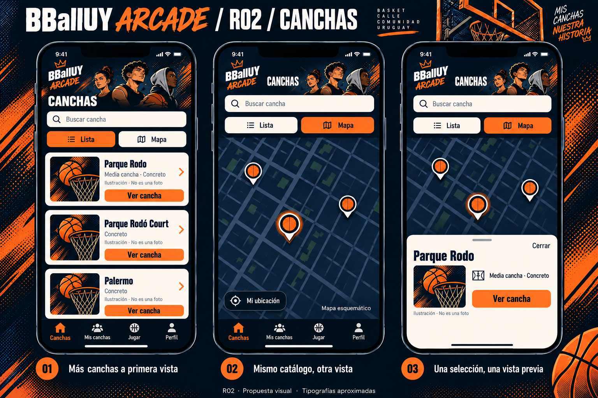
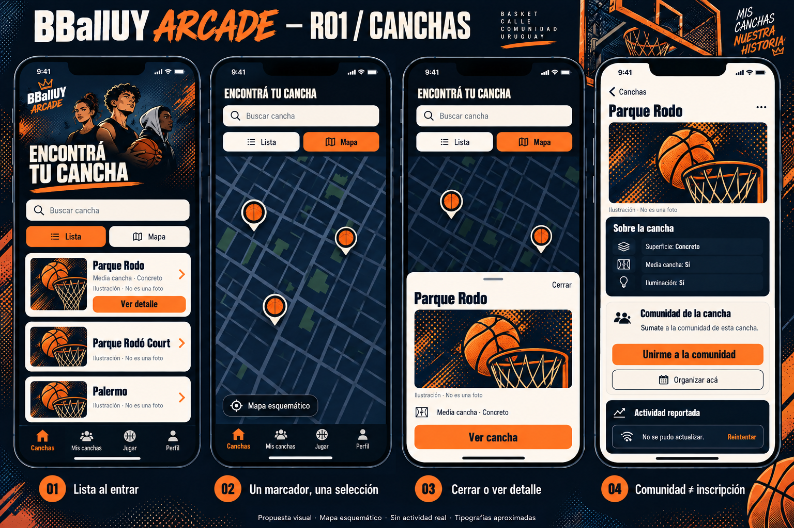
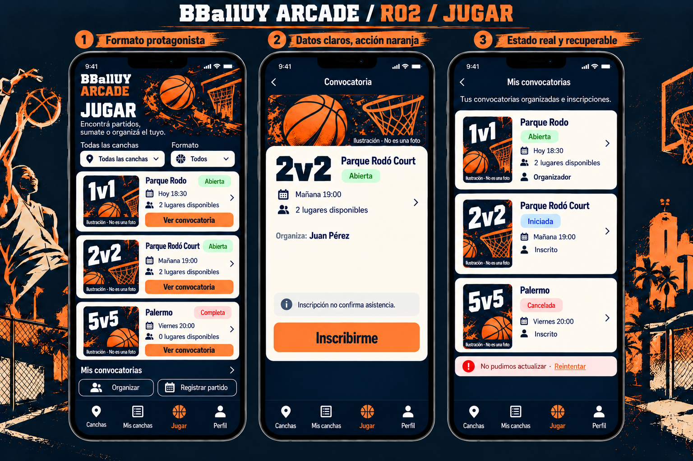
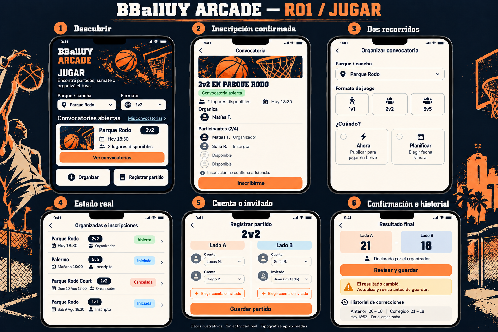
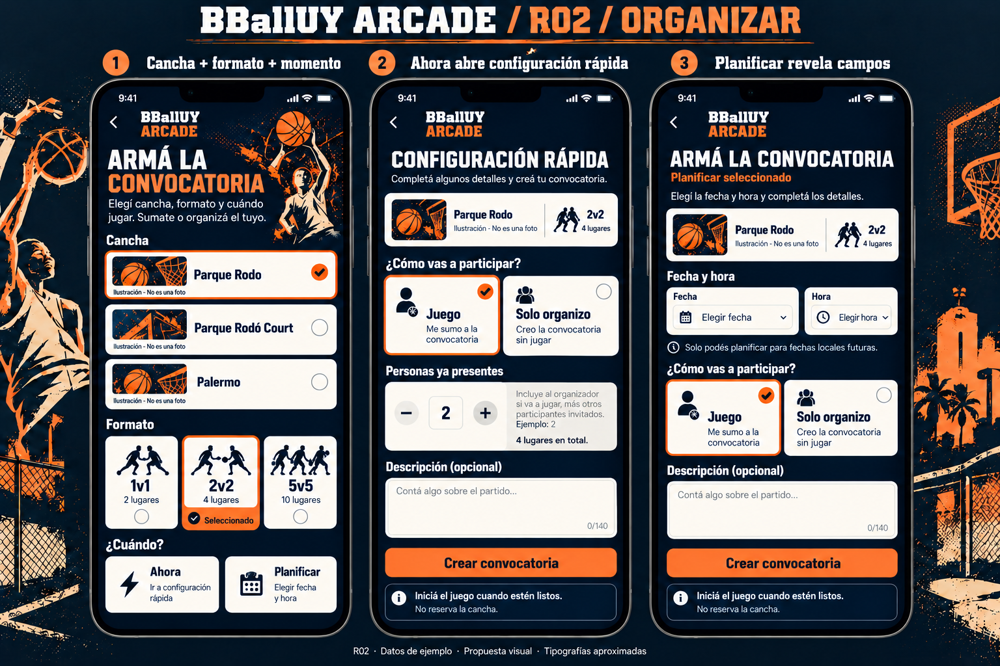

SPEC-003 / T01 / REVISIÓN R02 / 13 OCT 2026
Más básquet callejero.
Más espacio para jugar.
Propuesta visual para revisar. T01 continúa en progreso y no hay autorización para implementar T02. Tipografías aproximadas; interfaz inicial en español. Los horarios, cupos y estados de convocatorias son ilustrativos.
01 · Canchas

Encabezado menor, tres registros separados, tarjetas crema sobre azul noche, una única selección en el mapa y una vista previa compacta.Comparar con R01

R01 dedicaba más altura al personaje y título. R02 aumenta la superficie útil del listado y reduce la ilustración de la hoja a una miniatura. El mapa es esquemático, no geografía validada.
02 · Jugar

1v1, 2v2 y 5v5 protagonizan las tarjetas; datos sobre crema, acciones naranjas y fondo azul noche. Inscripción no confirma asistencia.Comparar con R01

Los formatos dejan de ser chips secundarios. La composición se acerca a una tarjeta de partido de videojuego; no añade puntos, ranking, resultados ni equipos a la búsqueda.
03 · Organizar convocatoria

Controles deportivos más visuales, conservando el recorrido. Ahora abre configuración rápida; Planificar revela campos. No se agrega un asistente por pasos.Los formatos mantienen 2/4/10 lugares totales. La elección de participación y las validaciones actuales se conservan. Las ilustraciones no sustituyen las etiquetas ni la información de capacidad.
Puntos para revisar
- ¿El encabezado y las tarjetas de Canchas tienen la densidad adecuada?
- ¿El protagonismo del formato transmite la identidad deportiva sin tapar los datos?
- ¿Los controles de Organizar se sienten claros y más cercanos a una preparación de partido?
- ¿La cantidad de arte y la propuesta de movimiento son adecuadas?
Anotaciones, diferencias y límites de la revisión · Prompts de generación
R01 se conserva sin cambios. R02 espera revisión expresa; accesibilidad, gestos y rendimiento requieren validación futura en dispositivo.